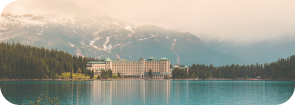
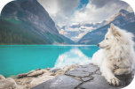
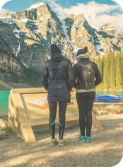

Why you should chose to ride with us?
We offer various tour options
- Moraine Lake Tour: Marvel at the stunning turquoise waters of Moraine Lake, one of Canada's most photographed locations.
- Lake Louise Tour: Discover the enchanting beauty of Lake Louise, with its crystal-clear waters and majestic glaciers.
- Combo Tour: Experience the best of both worlds with a tour that includes both Moraine Lake and Lake Louise.
Once you chose one of our tour options, you can customize it even more!
- Various Pick-up/Drop-off locations in both Canmore and Banff.
- Flexible Time Slots: starting from sunrise to sunset, to fit your schedule.
- Enjoy a premium tour experience at competitive rates.
On top of all that, we ‘ride’ Eco-friendly!
Our fleet of four 15-passenger vans are part of sustainable transportation, our mission is to minimize our impact on the park.
We strike to employ local professional drivers. Our drivers are passionate about sharing their knowledge of the park's history, wildlife, and ecology.
Lets hear it from our lovely customers!
"Our trip with Rocky Rides was absolutely fantastic! The driver was incredibly knowledgeable and friendly, sharing fascinating stories about the park. The van was clean and comfortable, and the views were simply breathtaking. I highly recommend Rocky Rides for anyone visiting Banff National Park."

"Rocky Rides made our trip to Moraine Lake and Lake Louise so easy and enjoyable. The booking process was straightforward, and the pick-up and drop-off were right on time. The driver was informative and helpful, and the van was in excellent condition. We had a wonderful time and would definitely use Rocky Rides again."

"We can't say enough about Rocky Rides! Our driver was not only knowledgeable but also incredibly passionate about the park. The van was clean, comfortable, and perfect for taking in the stunning scenery.
The flexibility of the tour and the convenient pick-up location made it a hassle-free experience. We'll definitely be booking with Rocky Rides again on our next visit to Banff!"
